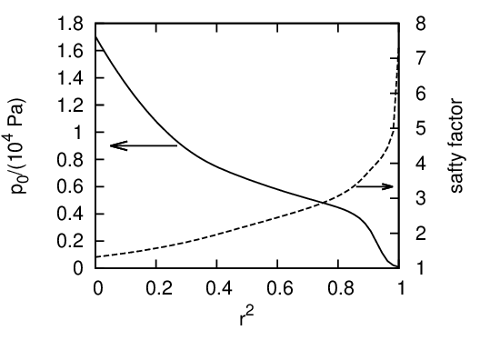

An analytic expression for the pressure profile of double (inner and external) transport barriers is given by
|
| (494) |
where ψ is the normalized poloidal flux, wi and we are the width of the inner and external barriers, ψi and ψe are the locations of the barriers, ai and ae is the height of the barriers, c is a constant to ensure P(ψ) = 0 at ψ = 1.

